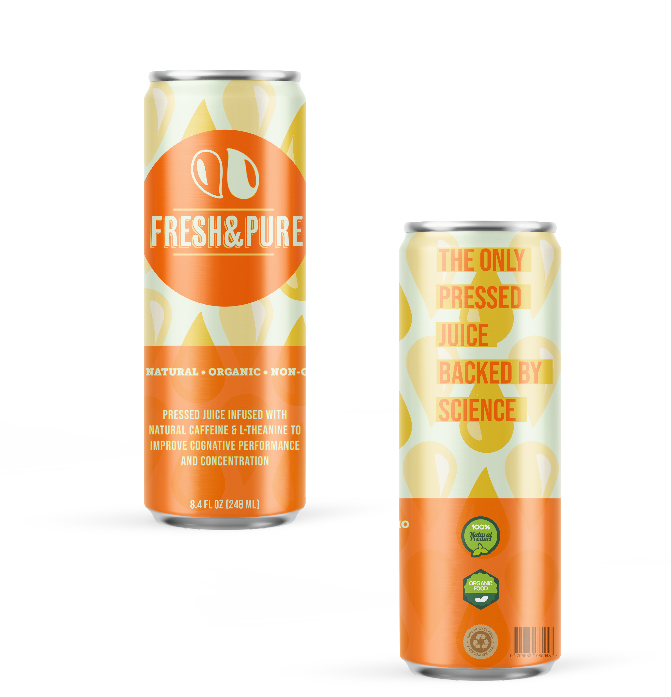
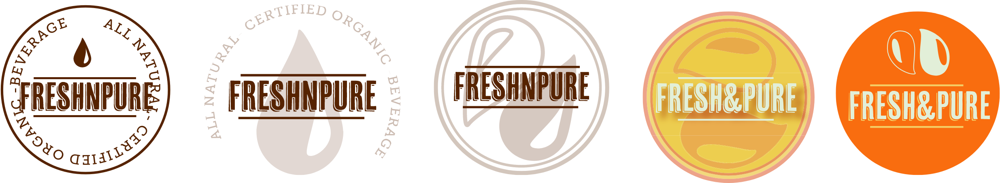

{ fresh&pure }
Product Description
FRESH&PURE is a pressed juice infused with natural
caffeine & L-theanine to improve cognitive performance and concentration. The non-proteinic amino acid L-theanine and caffeine, are naturally occurring ingredients in tea.
Moderate levels of L-theanine and caffeine have been
clinically tested to significantly improved accuracy during task switching and alertness.
https://pubmed.ncbi.nlm.nih.gov/18681988/
{ persona }
Khloe Kannin
Free-Spirited Art Student
She wants to finish her Art Degree and be featured in a San Francisco gallery. She loves fresh, organic, natural flavored foods and drinks. It’s important for her to shop and support local small business.
“ She loves fresh, organic, natural flavored foods and drinks ”
Guiding Concepts
Clean | Pure | Bold | Fresh | Modern | Graphic | Natural
{ color selection }
The highlight color is striking because of its high contrast against the darkest shade of orange; it appears almost white. The midtone is used in contrast to the vibrant red-orange and creates a pop of color that draws the eye in. The softer yellow juxtaposed alongside the saturated orange also emphasis additional contrast.
{ iterations }
